Morph and Motion Cameras
A camera that travels through a list of cameras, driven by a single Blend value, and a Motion Camera that makes any move feel hand-held.
Introduction
You place ordinary cameras where you want the shot to go. The Morph Camera blends between them: Blend 0 sits on the first camera, Blend 1 on the last, and every value in between is a smooth move through the others.
Position, rotation and the lens settings (focal length, sensor size, focus distance, f-stop) are all blended. Animate the Blend value and you have a camera move; change a source camera and the move follows instantly.
On top of that, the add-on can:
- write the Blend animation for you, in one move or with stops on each camera (Animate 0 → 1, Staggered);
- keep the horizon level (Stabilize);
- turn the result into an ordinary camera that works without the add-on (Bake);
- add a virtual camera operator on top, with footsteps, shake and body lag (Motion Camera).
Installation
- In Blender, open Edit › Preferences › Add-ons, click the arrow at the top right and choose Install from Disk…. Pick
morph_camera-.zip. You can also drag the zip file into the Blender window. - Make sure the add-on is enabled in the list.
- In Preferences › Save & Load, turn on Auto Run Python Scripts.
The Morph Camera is computed by Python drivers. When auto-run is off, Blender blocks them: the camera stays frozen and a warning appears in the header when you open a file. You can also allow them for one file with Allow Execution in that warning.
Quick start
- Put the cameras of your shot in their own collection, in the order the move should visit them.
- In the 3D Viewport, choose Add › Camera › Morph Camera.
- In the dialog, pick that collection as Source Collection and an Interpolation (see Morph Interpolation), then click OK.
- A camera named
Morph Camerais created, made the scene camera and selected. Its settings are in Properties › Object Data (the green camera tab), panel Morph Camera. - Drag Blend to move along the cameras, or click Animate 0 → 1 to animate it over the scene range.
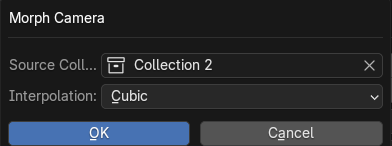
The Morph Camera panel
Everything is in one panel, on the camera's Object Data tab. From top to bottom:
| Control | What it does |
|---|---|
| Blend | Position along the cameras: 0 = first, 1 = last. More |
| Animate 0 → 1 | Keys the Blend for one continuous move. More |
| Staggered | Keys the Blend with a stop on each camera. More |
| Morph Interpolation | Shape of the path between cameras. More |
| Stabilize… | Removes the roll; optional object, axis and fade. More |
| Source Cameras, Order | The collection the cameras come from, and their order. More |
| Refresh Sources | Reads the collection again. |
| Camera list | Each camera with its Blend value; ▲▼ reorder. |
| Bake to Keyframes, Bake to Curve | Turn the result into a normal camera. More |
| Morph | Which lens settings are blended. More |
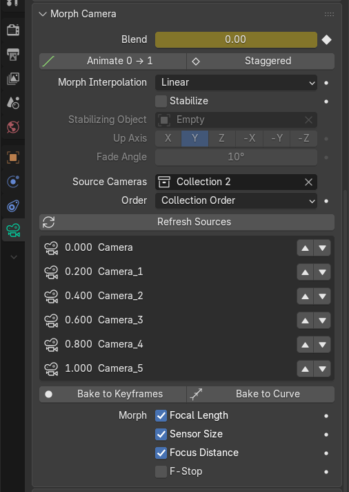
Source cameras
The source cameras are read from the collection in Source Cameras, including its child collections. Other Morph Cameras and Motion Cameras in that collection are skipped, so a Morph Camera can never use itself.
- Order: Collection Order keeps the order in which the cameras were linked to the collection; Name sorts them by name, with numbers in natural order (Camera_2 before Camera_10).
- Refresh Sources: click it after adding, removing or renaming cameras in the collection.
- ▲ ▼: move one camera up or down in the list. The move changes immediately.
The number in front of each camera is its Blend value. With n cameras, camera k (counting from 0) sits at k / (n − 1): with 6 cameras, 0.0, 0.2, 0.4, 0.6, 0.8 and 1.0. The cameras are evenly spaced in Blend, whatever the distance between them.
Move, rotate or animate a source camera and the Morph Camera follows immediately. You can even animate the source cameras themselves.
Blend
Blend is the only value you animate. The slider runs from 0 to 1, but you can type values from −1 to 2: outside 0–1 the camera continues past the first or last camera along the same curve. This is what lets overshooting animations (Back, Elastic, Bounce) actually overshoot.
Key it like any property (hover and press I), or let Animate 0 → 1 and Staggered write the keys.
Morph Interpolation
Morph Interpolation decides the shape of the path between the cameras. It does not change the timing: that is the Blend animation's job.
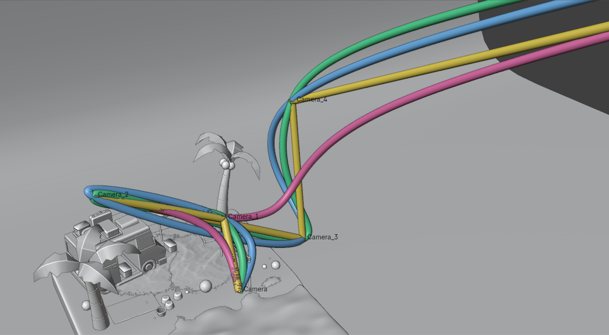
| Mode | Path | Passes through every camera |
|---|---|---|
| Linear | Straight lines, sharp turns at each camera | Yes |
| Cubic | Natural cubic spline: smooth, can swing wide between cameras | Yes |
| Akima | Smooth, more local: less overshoot when cameras are unevenly spaced | Yes |
| B-Spline | The smoothest; cameras act as control points that pull the curve | First and last only |
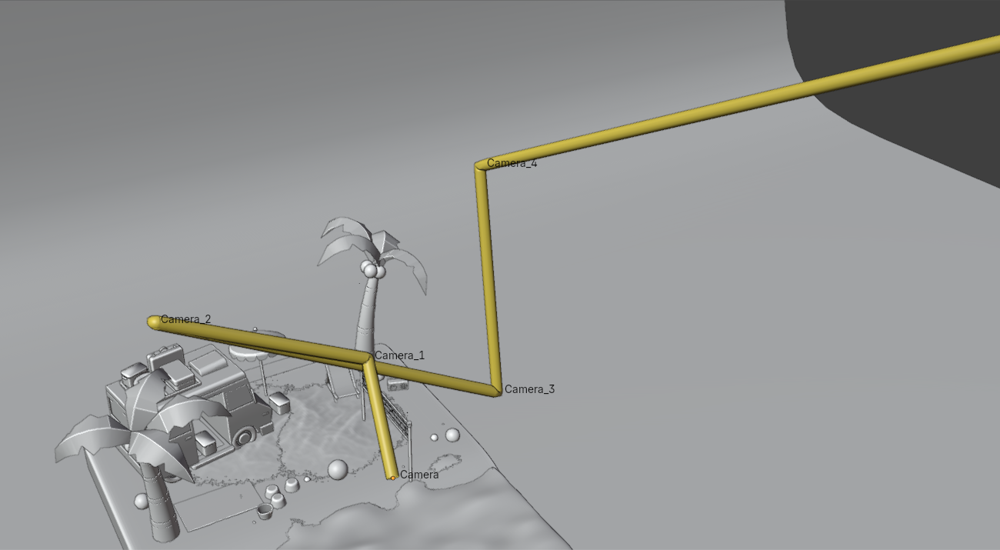
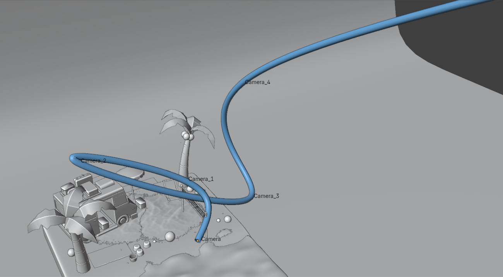
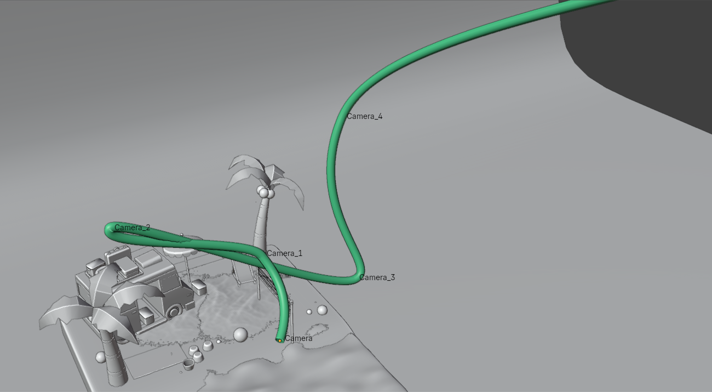
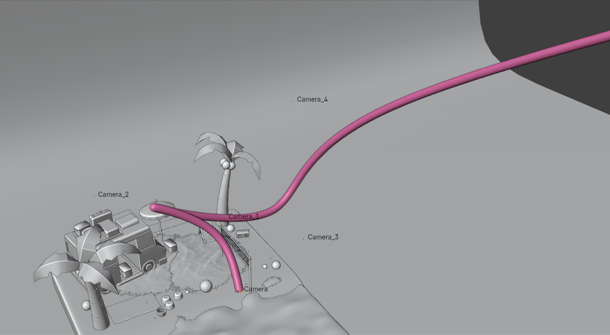
B-Spline and exact stops
With B-Spline the cameras are control points, not points on the path. The path starts on the first camera and ends on the last, but only passes near the others. The further a camera is from its neighbours, the further the path stays from it.
The panel shows a red note as a reminder: Exact stops won't be respected in this mode. A Staggered animation still stops at each camera's Blend value, but the camera holds near that camera rather than on it.
Use B-Spline for flowing moves where the cameras are guides. Use Cubic or Akima when the shot must frame exactly what each camera frames.
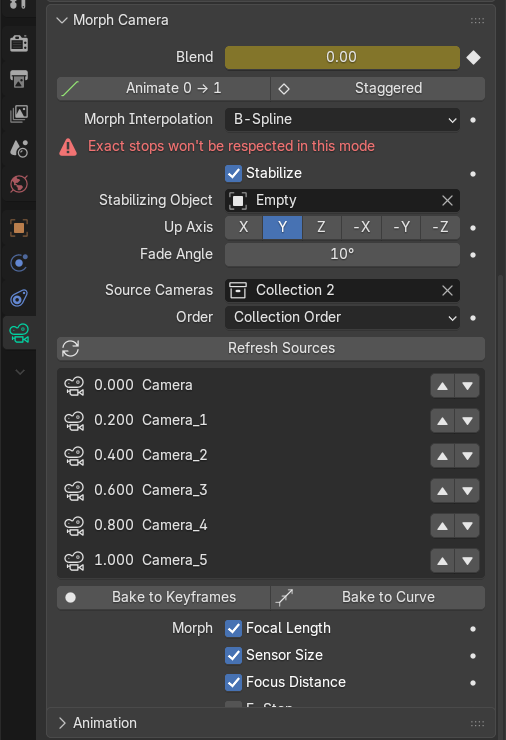
The rotation is blended the same way as the position, then rebuilt so the camera never rolls unexpectedly: the view direction is kept and the up direction is rebuilt from it.
Lens settings (Morph)
The Morph checkboxes at the bottom of the panel choose which camera settings are blended along with the position:
| Setting | Default | Notes |
|---|---|---|
| Focal Length | On | Zooms smoothly between the cameras' focal lengths. |
| Sensor Size | On | Sensor width. |
| Focus Distance | On | Depth of field focus distance. |
| F-Stop | Off | Aperture. Turn it on if the cameras use different apertures. |
A setting that is off keeps the Morph Camera's own value. When focus distance or f-stop is blended, depth of field is turned on if any source camera uses it.
Animate 0 → 1
One click writes a single move from the first camera to the last: a key at Blend 0 on the start frame and a key at Blend 1 on the end frame.
| Option | Meaning |
|---|---|
| Frame Start, End | The move's range. Defaults to the scene range. |
| Interpolation | How the Blend moves between the two keys. Choices |
| Smoothing | For Custom Bézier: how long the slow-in and slow-out last. |
Existing Blend keys are removed. Undo (Ctrl Z) restores them.
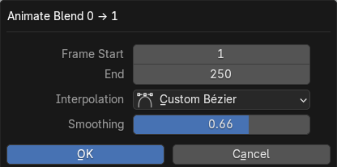
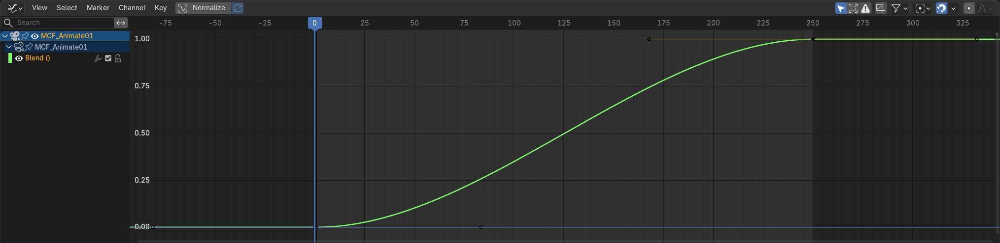
Because the cameras are evenly spaced in Blend, the camera spends the same time between each pair of cameras, whatever their distance. Far-apart cameras give fast moves; close cameras, slow ones. For full control of the rhythm, use Staggered or edit the keys in the Graph Editor.
Staggered animation
Staggered writes one key per camera, so the move visits each camera in turn, with an optional stop (a hold) on each.
| Option | Meaning |
|---|---|
| Frame Start, End | The whole animation's range. Defaults to the scene range. |
| Hold Frames | How long the camera stays still on each camera. More |
| Hold First & Last | Also hold on the first and last camera. More |
| Interpolation | How each move starts and ends. More |
| Easing, Back, Amplitude, Period | Shown for the easing types. More |
| Smoothing | For Custom Bézier. |
| Whole Frames | Rounds every key to a whole frame (on by default). |
The box at the bottom of the dialog previews the result: number of cameras, number of keys and the length of each move.
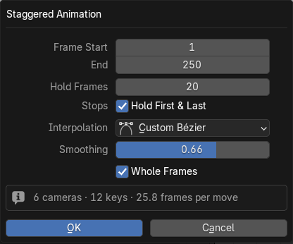
The time left after the holds is shared equally between the moves:
Example: frames 1–250, 6 cameras, 20-frame holds on all 6 → (249 − 120) ÷ 5 = 25.8 frames per move. If the holds leave no time to move, the dialog shows an error instead.
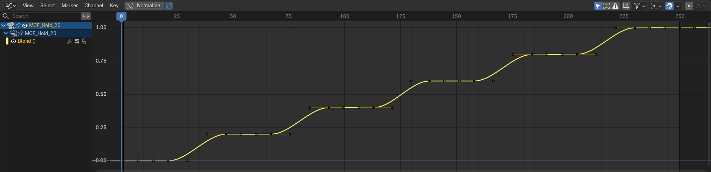
Interpolation
The same choices as Blender's Graph Editor, plus the add-on's own Custom Bézier:
| Interpolation | Effect on the camera |
|---|---|
| Constant | No move: the camera cuts from one camera to the next. |
| Linear | Constant speed, abrupt starts and stops. |
| Bézier | Blender's default smooth curve (auto-clamped handles). |
| Custom Bézier | Slows into and out of every camera. Smoothing sets how long: 0% is almost linear, 100% is the longest ease. |
| Sinusoidal … Circular | Easing curves from the gentlest (Sinusoidal) to the strongest (Circular). Easing |
| Back, Bounce, Elastic | Dynamic effects: overshoot, bounce, spring. |
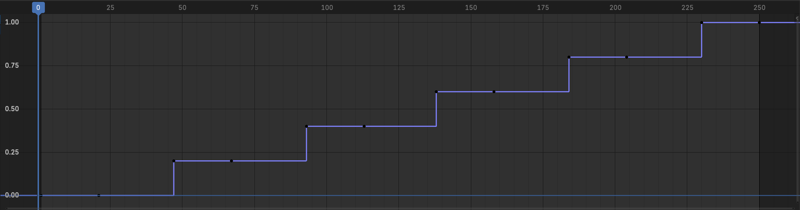
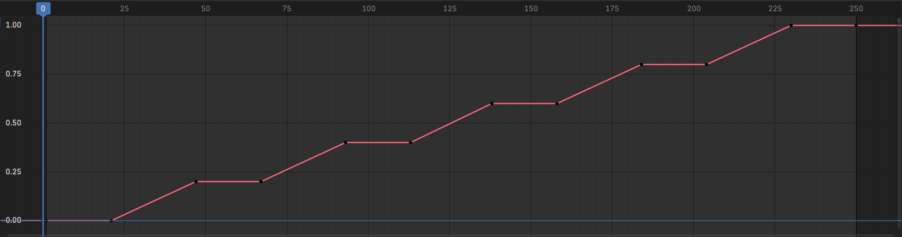
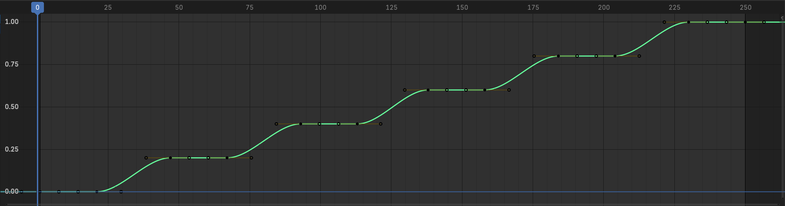
Whatever the interpolation, a hold is kept perfectly flat, so Elastic or Back never wobble while the camera should be still.
Easing
For the easing interpolations (Sinusoidal to Circular, Back, Bounce, Elastic), Easing says which end of each move gets the effect:
- Ease In: at the start of each move. The camera leaves slowly and arrives fast.
- Ease Out: at the end. It leaves fast and settles slowly.
- Ease In and Out: at both ends.
- Automatic: Blender's choice for each type.
Back sets the overshoot of Back. Amplitude and Period shape Elastic's bounces.
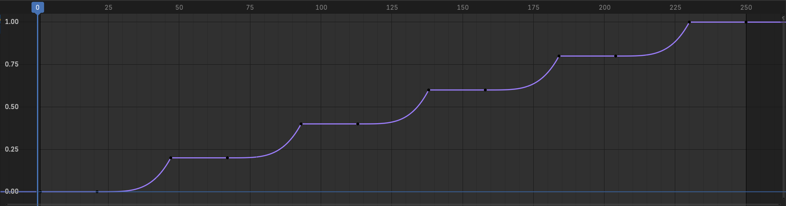
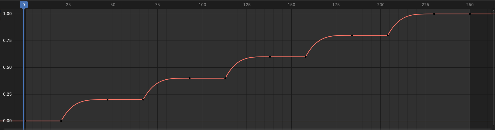
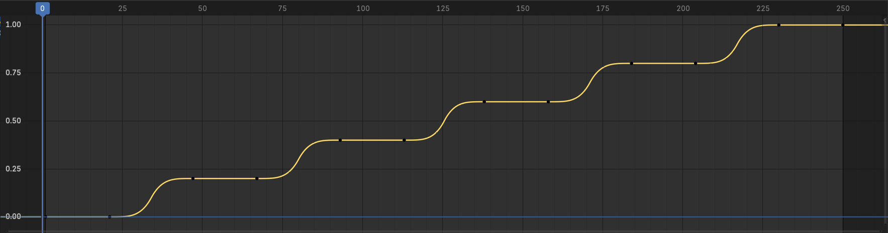
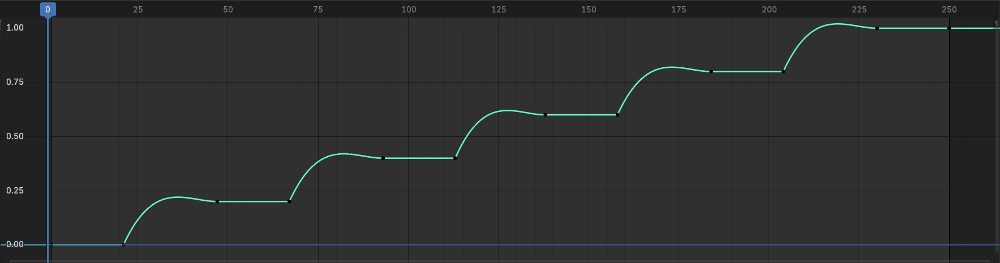
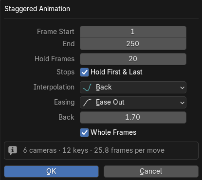
Hold Frames
Hold Frames is the number of frames the camera stays still on each camera. The longer the holds, the shorter the moves, since the total range stays the same. At 0 the camera never stops; with Custom Bézier it only slows down as it passes each camera.
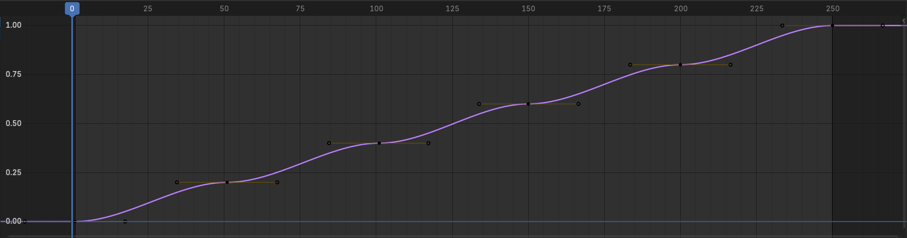
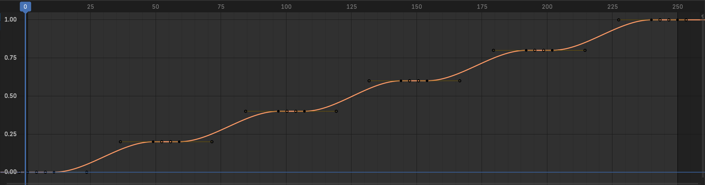
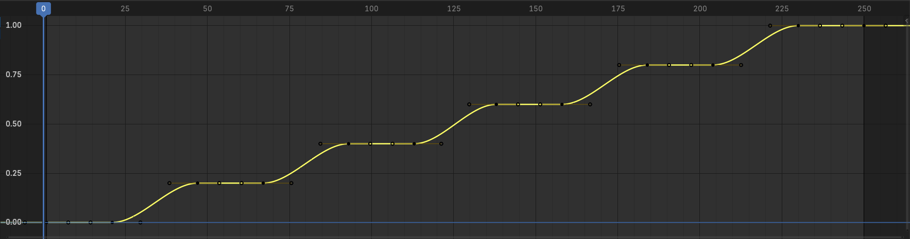
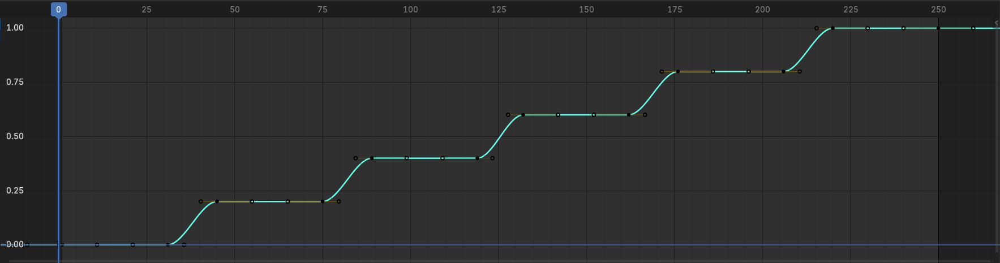
Stops: Hold First & Last
By default only the cameras in between hold: the animation starts moving on the first frame and is still moving until the last. Turn on Hold First & Last to also hold on the first and last camera, for a shot that starts and ends still.
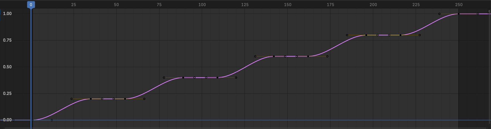
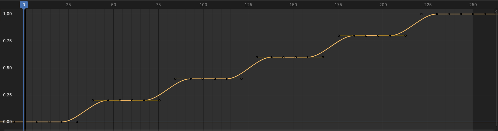
Stabilize
Stabilize removes the roll (bank) of the Morph Camera, so the horizon stays level. The position and the direction the camera looks are unchanged.
It levels the camera everywhere, including on the source cameras: a source camera you tilted on purpose is shown level too.
| Setting | Meaning |
|---|---|
| Stabilize | On: the camera is kept level with world Z, or with the Stabilizing Object. |
| Stabilizing Object | Optional. Its rotation defines "up"; its position is ignored. Rotate or animate it to tilt the horizon on purpose. |
| Up Axis | Which axis of the Stabilizing Object points up: Z for empties, Y for objects modelled with Y pointing up. Only used with a Stabilizing Object. |
| Fade Angle | 0° to 45°, default 10°. More |
Stabilizing Object
Without an object, "up" is world Z. With one, "up" is the chosen axis of that object, so the horizon follows it. A Morph Camera cannot be used as Stabilizing Object.
Fade Angle
When the camera looks almost straight along "up" (straight down, for example), "level" no longer means anything, and a tiny change of direction would spin the camera. Within the Fade Angle of that direction, Stabilize fades out smoothly instead.
Keep the default 10° unless one of your cameras looks nearly straight up or down. Then raise it until the spin disappears.
Bake
Baking turns the Morph Camera into an ordinary camera with keyframes. The baked camera plays at full speed, renders anywhere and needs neither the add-on nor Auto Run Python Scripts.
Baking plays the animation over the chosen range and records what the Morph Camera does. The new camera becomes the scene camera. Lens settings are only keyed if they actually change.
| Option | Choices |
|---|---|
| Frame Start, End | Defaults to the range of the Blend keys, or the scene range. |
| Rotation Keys | At Stops: only where the camera sits on a source camera (both ends of each hold, plus first and last frame), smooth in between. Every Frame: an exact copy. |
| Lens Keys | Every Frame (exact) or At Stops (lighter). |
| Rotation Mode | Quaternion: no gimbal problems. Euler XYZ: easier to edit by hand. |
| Morph Camera | What happens to the original: Keep, Hide (default) or Delete. |
Bake to Keyframes
Creates <name>_Baked, with its location keyed on every frame and its rotation keyed at the stops.
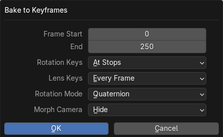
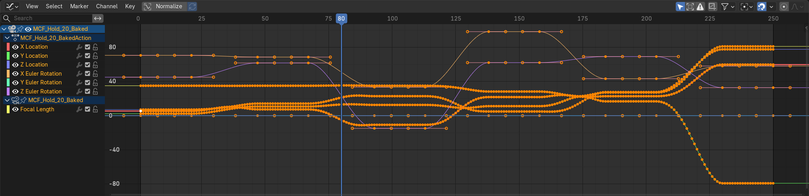
Bake to Curve
Creates a path curve, <name>_Path, and a camera, <name>_OnPath, that follows it with a Follow Path constraint. The curve is the morph path itself, so you can see and edit the route in the viewport.
- Path Resolution: curve points between two cameras (32 by default).
- Timing Keys: the constraint's offset is keyed on Every Frame (exact timing) or At Stops (lighter, smooth in between).
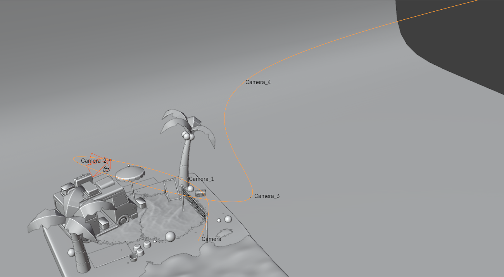
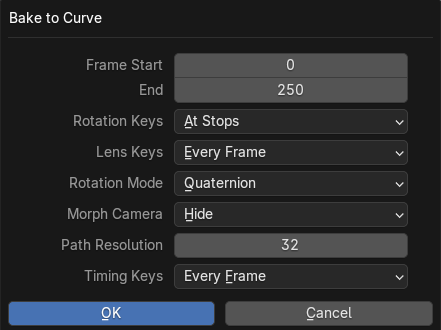
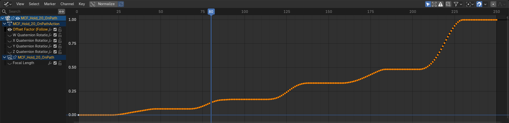
Motion Camera
The Motion Camera is a second camera that follows another object, its Base, as if a camera operator were carrying it: footsteps, head and hand movement, and the lag or bounce of a body following a move.
The Base can be a Morph Camera, any animated camera or object, or an empty created for it. The two tools stack: a Morph Camera plans the move, a Motion Camera on top of it makes it feel hand-held.
The virtual operator
The camera hangs on a simple rig:
- a foot on the ground, under the Base;
- a head 1.75 m above the foot;
- the camera, held 25 cm to the right of the head and 35 cm in front of it.
Each part can move on its own: footsteps move the foot, head rotation turns the head (which swings the camera on its arm), and the hands add their own shake. With every effect off, the camera sits exactly on the Base.
Creating a Motion Camera
- Select what the camera should follow: a Morph Camera, another camera or any object. Select nothing to start from scratch.
- In the 3D Viewport, choose Add › Camera › Motion Camera.
- A camera named
Motion Camerais created, made the scene camera and selected. Its settings are in Properties › Object Data, panel Motion Camera.
| Selected | The Base becomes |
|---|---|
| A camera (Morph Camera or not) | That camera. Its lens settings are copied to the new camera. |
| A Motion Camera | Its Base, so the new camera follows the same thing. |
| Any other object | That object. |
| Nothing | A new empty, Motion Camera Base, at the 3D cursor, looking along +Y and level. Animate it like a camera. |
The Motion Camera panel
The panel has three parts: the main settings, then the Dynamics and Motion sub-panels.
| Control | What it does |
|---|---|
| Base | What the camera follows. A Motion Camera can't follow another Motion Camera. |
| Inherit Camera Parameters | When the Base is a camera: use its focal length, sensor size and focus distance (on by default). Greyed out for other objects. |
| Re-simulate | Recomputes the dynamics from the start frame. Normally automatic. |
| Bake to Keyframes | Turns the result into a normal camera. More |
A Motion Camera only shows its own panel. To change the move itself, select the Base.
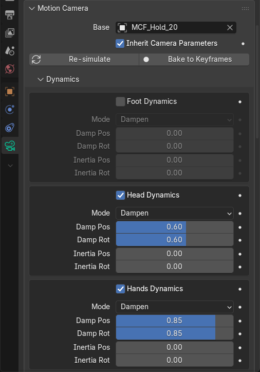
Motion: presets, footsteps and noise
The Motion sub-panel holds everything that shakes the camera. It depends only on time, so you can scrub anywhere and the result is always the same.
Presets
| Preset | Feel |
|---|---|
| Calm | Barely-there breathing of a camera held very still. |
| Steady Cam | Floating stabilised rig: slow drift, soft steps. |
| Ego | First-person handheld while walking. |
| Frantic | Shaky, nervous handheld for action scenes. |
| Custom | Your own settings. |
A preset fills in the Footsteps and the three noise layers; it doesn't touch the Dynamics. Change any value and the menu switches to Custom, keeping the values.
Trying a preset doesn't lose your work: your own values are remembered when you leave Custom, and come back when you choose Custom again.
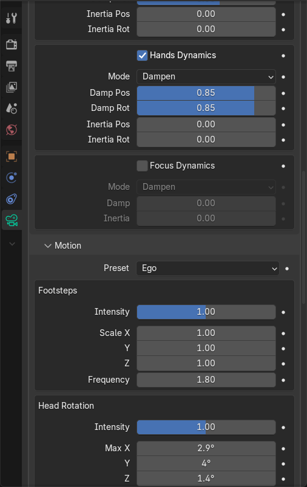
Seen from behind the camera, the path it draws in 10 seconds while its Base stands still:
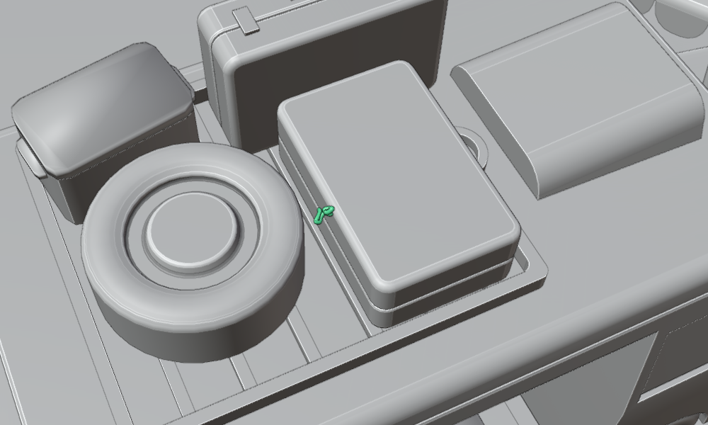
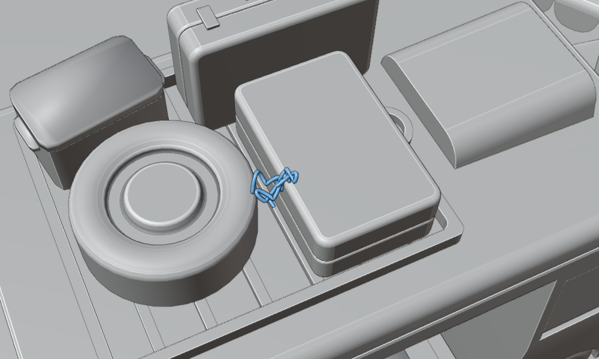
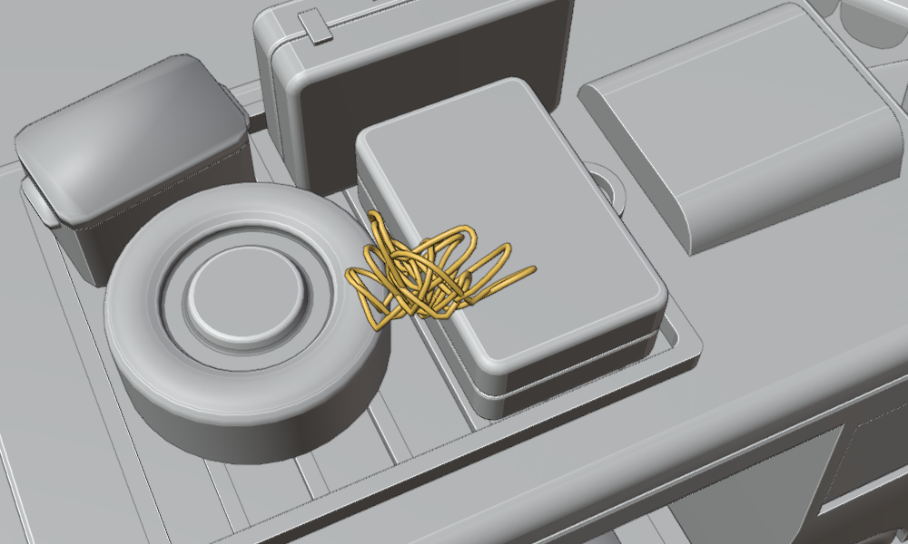
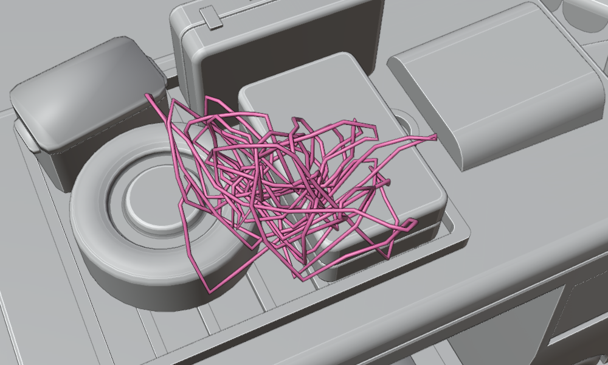
Footsteps
A walking rhythm on the foot: a sideways sway of 2 cm (one cycle every two steps), a 2.5 cm bob lowest at each step, and a small forward push.
| Setting | Meaning |
|---|---|
| Intensity | 0 = off (default). 1 = normal walk; up to 2 on the slider. |
| Scale X, Y, Z | Scales the sideways sway, the vertical bob and the forward push separately. |
| Frequency | Steps per second (1 by default). |
Head Rotation, Camera Rotation, Camera Position
Three layers of smooth random movement (fractal noise), each with the same settings:
- Head Rotation turns the head. Because the camera is held in front of the head, it also moves the camera sideways: the most natural hand-held look. Off by default.
- Camera Rotation turns the camera itself: pitch (X), yaw (Y) and roll (Z). On by default, up to 2°.
- Camera Position shifts the camera itself. On by default, up to 5 cm.
| Setting | Meaning |
|---|---|
| Intensity | Multiplies the whole layer. 0 = off. |
| Max X, Y, Z | Largest deviation per axis: degrees for rotations, metres for position. |
| Frequency X, Y, Z | Speed of the movement per axis. Higher is faster and more nervous. |
| Octaves | Detail: each octave adds a finer, faster jitter on top (3 by default, up to 8). |
| DeSync | How independently the three axes move: 0 = all together, 1 (default) = independent. |
| Offset X, Y, Z | Shifts the random pattern. Give two Motion Cameras different offsets so they don't shake the same way. |
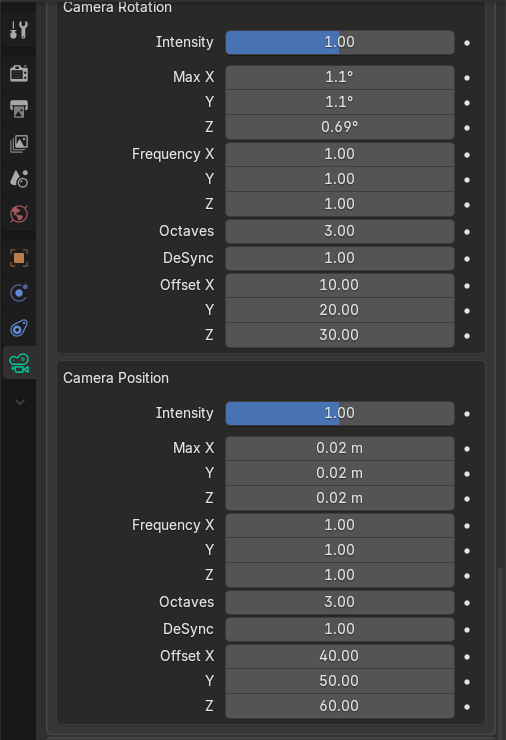
Dynamics
Dynamics give the rig weight: when the Base moves, the foot, head and hands follow with a delay or a bounce instead of sticking to it.
Each of Foot, Head and Hands has its own switch and settings. They add up: the hands follow the head, which follows the foot.
| Setting | Dampen | Spring |
|---|---|---|
| Mode | Lags behind and catches up smoothly. | Springs back and overshoots, like a sprung rig. |
| Damp Pos, Damp Rot | How strongly position and rotation lag. 0 = no lag. | How soft the spring is: higher is slower and wider. |
| Inertia Pos, Inertia Rot | How much momentum is kept: the camera drifts past the target. | How long the bouncing lasts. |
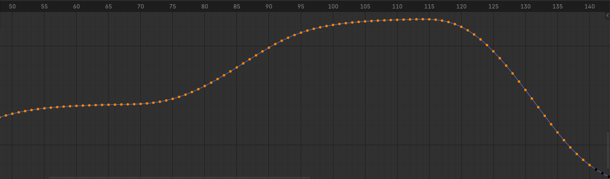
Focus Dynamics
The same idea for the focus distance: with a camera Base and Inherit Camera Parameters on, the focus follows the Base camera's focus distance with a lag (Dampen) or a bounce (Spring), like a focus puller catching up. It has a single Damp and Inertia.
How dynamics are computed
Dynamics depend on what happened before, so they are simulated frame by frame from the scene's start frame and kept in memory. The first playback from the start does the work; scrubbing afterwards is instant.
- Any change of a setting, of the Base's animation or of the start frame re-simulates automatically.
- Re-simulate forces it if something looks out of date.
- Before the start frame, the camera has no dynamics.
Bases with constraints or drivers
Any Base works, including one moved by constraints, drivers or an animated parent. The panel tells you when such a Base needs one extra step.
For a Morph Camera or a keyframed object, the Motion Camera computes the Base itself, frame by frame. A Base driven by constraints, drivers or an animated parent can't be computed that way, so the Motion Camera follows it through a Child Of constraint named Motion Camera Base, added and removed automatically. Don't delete it.
Sample Base
Without Dynamics there is nothing to do. With Dynamics, the simulation needs the Base's whole path, so a red box asks you to click Sample Base: the add-on plays through the scene range once and records where the Base goes. The Base itself is not changed.
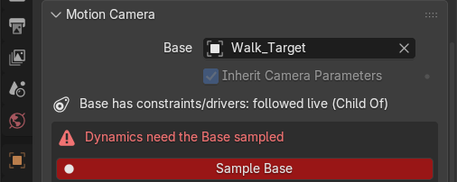
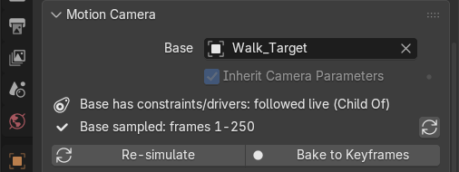
If the Base's animation or the scene range changes, the box turns red again: Base changed since it was sampled. Bake samples again by itself; rendering does not, so check the panel before a render.
Bake a Motion Camera
Bake to Keyframes plays the range and records the Motion Camera into a clean camera, <name>_Baked, keyed on every frame. It plays at full speed and renders anywhere, without the add-on.
| Option | Choices |
|---|---|
| Frame Start, End | Defaults to the scene range. |
| Rotation Mode | Euler XYZ (default, easy to edit) or Quaternion (no gimbal flips). |
| Motion Camera | What happens to the original: Keep, Hide (default) or Delete. |
Lens settings are keyed only if they change. With a Base that needs sampling, the Base is sampled again first, so the bake always matches it.
Troubleshooting
| Problem | Solution |
|---|---|
| The Morph Camera doesn't move | Auto Run Python Scripts is off: see Installation, or click Allow Execution in the header warning. |
| A camera is missing from the list | Click Refresh Sources. Morph and Motion Cameras are never used as sources. |
| The order is wrong | Use ▲▼, or set Order to Name and name the cameras in sequence. |
| The move doesn't stop exactly on a camera | Morph Interpolation is B-Spline: use Cubic or Akima. |
| The camera spins when looking straight down | Raise Stabilize's Fade Angle. |
| Animate buttons are greyed out | The Morph Camera needs at least 2 source cameras. |
| Rendering on a farm or another computer | Bake the camera first: the baked camera needs nothing installed. |
| Motion Camera: red "Sample Base" box | The Base uses constraints or drivers and Dynamics are on: click Sample Base. More |
| Motion Camera: the first playback is slow | Dynamics are being simulated from the start frame; afterwards they are cached. |
| Motion Camera: the preset changed to Custom | A value was edited. Your values are kept; choose a preset again to replace them. |
| Motion Camera: shake identical on two cameras | Give them different Offset values. |
Version history
- 1.7.0
- Morph Interpolation renamed: Soft 1 → Cubic, Soft 2 → Akima (existing files keep their setting). New B-Spline interpolation, with a warning that exact stops are not respected.
- 1.6.0
- Motion Camera follows Bases with constraints, drivers or animated parents.
- 1.5
- Motion Camera, presets and its bake. Smoothness fixes.
- Earlier
- Morph Camera with Linear, Soft 1 and Soft 2; Animate 0 → 1 and Staggered with interpolation choices; Bake to Keyframes and Bake to Curve; Stabilize with Stabilizing Object, Up Axis and Fade Angle; lens keys options.